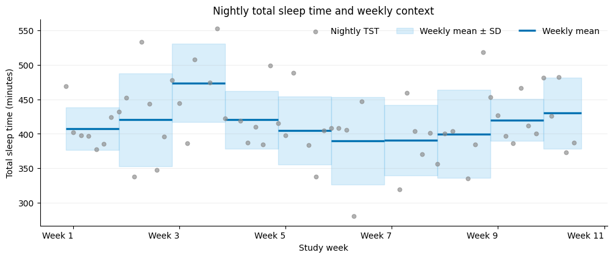
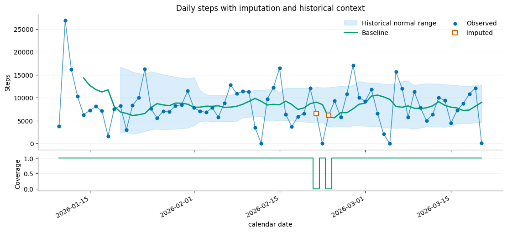
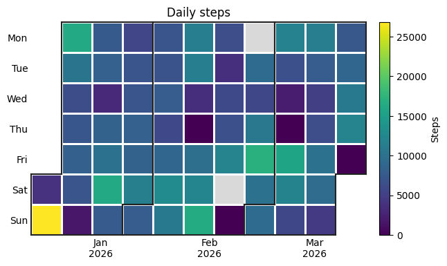
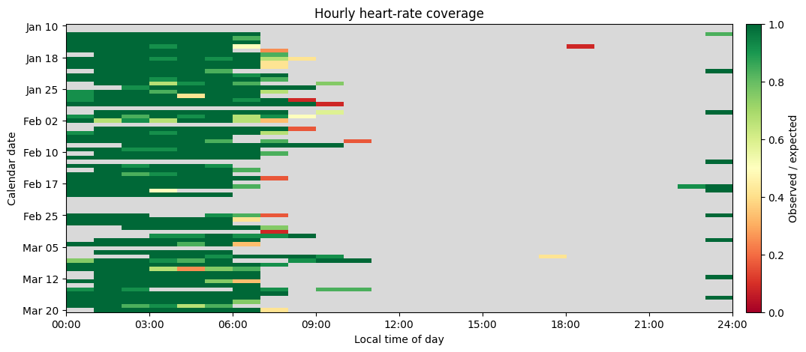
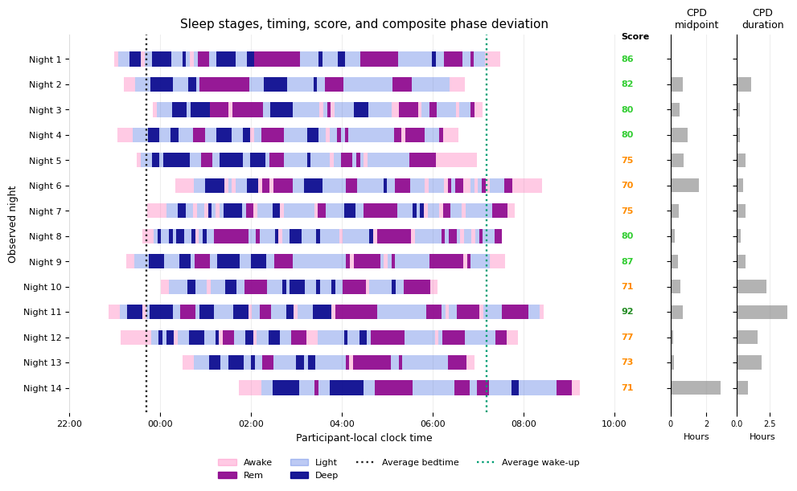
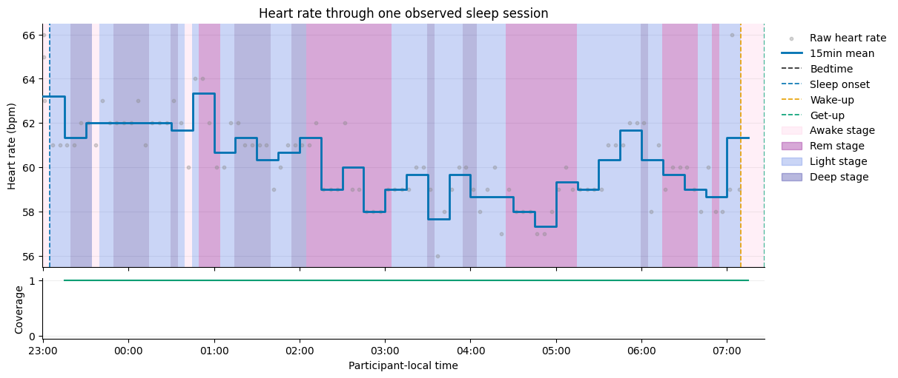
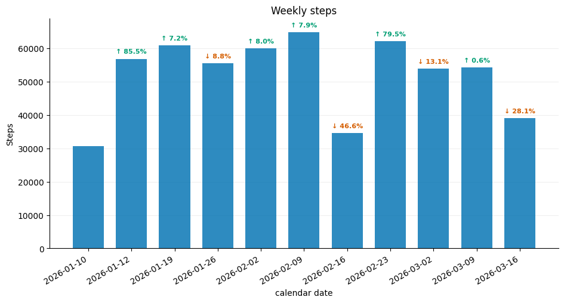

Analyze wearable data with pywearable
This example guide follows one Oura participant from raw loader access to domain features, sleep-anchored cycles, hierarchies, trajectory post-processing, and visualization. The measurements are real, and calendar dates have been shifted.
The guide shows how to:
check which streams a loader exposes;
extract activity, heart-rate, HRV, respiration, SpO2, sleep, and provider-native trajectories;
distinguish calendar resolutions, sleep cycles, and hierarchical aggregation;
impute selected gaps, add a historical trend, and choose a plot.
Setup
The saved outputs are included for illustration. To run the notebook, set PYWEARABLE_OURA_ROOT to the root directory of an Oura API v2 export.
[1]:
import os
import warnings
from pathlib import Path
import matplotlib.dates as mdates
import matplotlib.pyplot as plt
import pandas as pd
from matplotlib.ticker import FuncFormatter
from IPython.display import display
from pywearable import (
activity,
cycle,
heart_rate,
hrv,
provider_features,
respiration,
schema,
sleep,
trajectory,
visualization,
)
from pywearable.loader import OuraLoader
warnings.filterwarnings(
"ignore",
message=r".*Oura heart-rate samples have no unambiguous local offset.*",
)
data_root_value = os.environ.get("PYWEARABLE_OURA_ROOT")
if data_root_value is None:
raise FileNotFoundError(
"Set PYWEARABLE_OURA_ROOT to an Oura API v2 export root."
)
data_root = Path(data_root_value).expanduser()
if not data_root.is_dir():
raise FileNotFoundError(
"PYWEARABLE_OURA_ROOT must point to an Oura API v2 export root."
)
loader = OuraLoader(data_root)
source_user = loader.get_user_ids()[0]
public_user = "example-participant"
print("Loaded one Oura participant")
Loaded one Oura participant
Start with loader capabilities
What can be extracted always depends on the selected loader. In the current OuraLoader implementation, pywearable can access daily activity summaries, subdaily heart rate, provider-computed HRV, nightly respiratory-rate and SpO2 summaries, sleep summaries and stages, and readiness features. Timestamped step intervals are not currently available through this loader, so peak-hour activity and the multi-stream weekly overview cannot be calculated from it.
[2]:
capability_table = pd.DataFrame(
{
"loader setting": [
"activity_source",
"activity_primary_resolution",
"hrv_source",
"respiratory_rate_source",
"spo2_source",
"provider_features",
],
"value": [
loader.activity_source,
loader.activity_primary_resolution,
loader.hrv_source,
loader.respiratory_rate_source,
loader.spo2_source,
f"{len(loader.provider_features)} Oura readiness features",
],
}
)
display(capability_table)
| loader setting | value | |
|---|---|---|
| 0 | activity_source | daily_summary |
| 1 | activity_primary_resolution | daily |
| 2 | hrv_source | provider_samples |
| 3 | respiratory_rate_source | provider_summary |
| 4 | spo2_source | provider_summary |
| 5 | provider_features | 11 Oura readiness features |
Choose one well-supported example interval
For the saved example, the code below selects the 70-day activity interval with the most observed days. Running it on another export selects an interval from that export.
[3]:
raw_activity = loader.load_activity_summary(source_user)
source_start = raw_activity[schema.CALENDAR_DATE_COL].min().normalize()
source_end = raw_activity[schema.CALENDAR_DATE_COL].max().normalize() + pd.Timedelta(days=1)
all_steps = activity.get_activity_statistics(
loader,
statistic=activity.ACTIVITY_STATISTIC_STEPS,
user_id=source_user,
start_date=source_start,
end_date=source_end,
resolution="daily",
)
step_series = all_steps.xs(source_user, level=schema.USER_COL)[
activity.ACTIVITY_STATISTIC_STEPS
]
rolling_support = step_series.notna().rolling(70, min_periods=70).sum()
final_day = rolling_support.idxmax()
analysis_start = final_day - pd.Timedelta(days=69)
analysis_end = final_day + pd.Timedelta(days=1)
step_times = all_steps.index.get_level_values(schema.CALENDAR_DATE_COL)
steps = all_steps[(step_times >= analysis_start) & (step_times < analysis_end)]
PUBLIC_MONDAY = pd.Timestamp("2026-01-05")
def public_trajectory(frame):
# Replace identifiers and shift datetimes while retaining values.
rows = frame.reset_index()
rows[schema.USER_COL] = public_user
datetime_columns = [
column
for column in rows
if pd.api.types.is_datetime64_any_dtype(rows[column])
]
if datetime_columns:
origin = min(rows[column].dropna().min() for column in datetime_columns)
anchor = PUBLIC_MONDAY + pd.Timedelta(days=origin.weekday())
for column in datetime_columns:
rows[column] = anchor + (rows[column] - origin)
return rows
print(f"Selected {len(steps)} study days; {step_series.loc[analysis_start:final_day].notna().sum()} contain steps")
display(public_trajectory(steps).head())
Selected 70 study days; 68 contain steps
| user_id | calendar_date | activity_steps | activity_steps__coverage | |
|---|---|---|---|---|
| 0 | example-participant | 2026-01-10 | 3806.0 | 1.0 |
| 1 | example-participant | 2026-01-11 | 26829.0 | 1.0 |
| 2 | example-participant | 2026-01-12 | 16185.0 | 1.0 |
| 3 | example-participant | 2026-01-13 | 10359.0 | 1.0 |
| 4 | example-participant | 2026-01-14 | 6286.0 | 1.0 |
Extract features across domains
Each domain returns the same trajectory shape: a (user_id, time) index, feature columns, and matching coverage columns. The feature names describe the measurement; the loader determines whether the required stream exists.
[4]:
with warnings.catch_warnings():
warnings.simplefilter("ignore")
hourly_hr = heart_rate.get_heart_rate_statistics(
loader,
statistic=heart_rate.HEART_RATE_STATISTIC_MEAN,
user_id=source_user,
start_date=analysis_start,
end_date=analysis_end,
resolution="1h",
time_reference="local",
)
daily_hr = heart_rate.get_heart_rate_statistics(
loader,
statistic=[
heart_rate.HEART_RATE_STATISTIC_MEAN,
heart_rate.HEART_RATE_STATISTIC_REST,
],
user_id=source_user,
start_date=analysis_start,
end_date=analysis_end,
resolution="daily",
)
nightly_sleep = sleep.get_sleep_statistics(
loader,
statistic=[
sleep.SLEEP_STATISTIC_TST,
sleep.SLEEP_STATISTIC_WASO,
sleep.SLEEP_STATISTIC_BEDTIME,
sleep.SLEEP_STATISTIC_SLEEP_SCORE,
sleep.SLEEP_STATISTIC_CPD_MIDPOINT,
sleep.SLEEP_STATISTIC_CPD_DURATION,
],
user_id=source_user,
start_date=analysis_start,
end_date=analysis_end,
resolution="nightly",
)
nightly_hrv = hrv.get_hrv_statistics(
loader,
statistic=hrv.HRV_STATISTIC_ROOT_MEAN_SQUARED_SUCCESSIVE_DIFFERENCES,
user_id=source_user,
start_date=analysis_start,
end_date=analysis_end,
resolution="nightly",
)
breathing = respiration.get_respiration_statistics(
loader,
statistic=[
respiration.RESPIRATORY_RATE_STATISTIC_MEAN,
respiration.SPO2_STATISTIC_MEAN,
],
user_id=source_user,
start_date=source_start,
end_date=source_end,
resolution="nightly",
)
readiness = provider_features.get_provider_features(
loader,
feature=provider_features.OURA_READINESS_SCORE,
user_id=source_user,
start_date=analysis_start,
end_date=analysis_end,
)
trajectories = {
"Activity": steps,
"Heart rate": daily_hr,
"HRV": nightly_hrv,
"Respiration and SpO2": breathing,
"Sleep": nightly_sleep,
"Oura readiness": readiness,
}
summary = pd.DataFrame(
{
"rows": {name: len(frame) for name, frame in trajectories.items()},
"feature columns": {
name: sum(
not column.endswith("__coverage")
and column not in {"period_start", "period_end"}
for column in frame.columns
)
for name, frame in trajectories.items()
},
"non-missing values": {
name: int(frame.notna().sum().sum())
for name, frame in trajectories.items()
},
}
)
display(summary)
| rows | feature columns | non-missing values | |
|---|---|---|---|
| Activity | 70 | 1 | 138 |
| Heart rate | 70 | 2 | 66 |
| HRV | 70 | 7 | 960 |
| Respiration and SpO2 | 202 | 2 | 232 |
| Sleep | 70 | 6 | 766 |
| Oura readiness | 70 | 1 | 130 |
Sleep-anchored cycles
A night runs from one main-sleep bedtime to its end, an awake cycle runs from that end to the following bedtime, and a physiological cycle runs from one bedtime to the next.
[5]:
cycle_rows = []
for cycle_type in (
cycle.CYCLE_NIGHT,
cycle.CYCLE_AWAKE,
cycle.CYCLE_PHYSIOLOGICAL,
):
intervals = cycle.get_intervals(
loader,
cycle_type,
user_id=source_user,
start_date=analysis_start,
end_date=analysis_end,
).xs(source_user, level=schema.USER_COL)
valid = intervals[intervals["interval_valid"]].head(5)
cycle_rows.append(
pd.DataFrame(
{
"cycle": cycle_type,
"study row": range(1, len(valid) + 1),
"duration (hours)": (
valid["end_time"] - valid["start_time"]
).dt.total_seconds().div(3600).round(2).to_numpy(),
}
)
)
display(pd.concat(cycle_rows, ignore_index=True))
| cycle | study row | duration (hours) | |
|---|---|---|---|
| 0 | cycle_night | 1 | 8.45 |
| 1 | cycle_night | 2 | 7.43 |
| 2 | cycle_night | 3 | 7.25 |
| 3 | cycle_night | 4 | 7.44 |
| 4 | cycle_night | 5 | 7.47 |
| 5 | cycle_awake | 1 | 15.77 |
| 6 | cycle_awake | 2 | 17.20 |
| 7 | cycle_awake | 3 | 15.98 |
| 8 | cycle_awake | 4 | 16.98 |
| 9 | cycle_awake | 5 | 17.38 |
| 10 | cycle_physiological | 1 | 24.22 |
| 11 | cycle_physiological | 2 | 24.63 |
| 12 | cycle_physiological | 3 | 23.23 |
| 13 | cycle_physiological | 4 | 24.42 |
| 14 | cycle_physiological | 5 | 24.85 |
Hierarchies preserve the aggregation path
Here nightly total sleep time is the child level. Weekly means and standard deviations are calculated from valid nights, so each night receives equal weight. The lower-level observations and parent estimates remain visible together.
[6]:
hierarchy_ax = visualization.plot_hierarchical_trajectory(
loader,
sleep.SLEEP_STATISTIC_TST,
("nightly", "weekly"),
user_id=source_user,
start_date=analysis_start,
end_date=analysis_end,
child_label="Nightly TST",
center_label="Weekly mean",
range_label="Weekly mean ± SD",
title="Nightly total sleep time and weekly context",
ylabel="Total sleep time (minutes)",
show=False,
)
def relative_week(value, _):
timestamp = pd.Timestamp(mdates.num2date(value)).tz_localize(None)
return f"Week {(timestamp.normalize() - analysis_start).days // 7 + 1}"
hierarchy_ax.xaxis.set_major_locator(mdates.WeekdayLocator(interval=2))
hierarchy_ax.xaxis.set_major_formatter(FuncFormatter(relative_week))
hierarchy_ax.tick_params(axis="x", rotation=0)
hierarchy_ax.set_xlabel("Study week")
plt.show()

Imputation and trends are explicit trajectory operations
Imputation fills eligible gaps and adds __is_imputed. Trend estimation then adds participant-specific baseline, normal-range, deviation, and support columns. Coverage continues to describe the source evidence.
[7]:
public_steps = public_trajectory(steps).set_index(steps.index.names)[steps.columns]
filled_steps = trajectory.impute_trajectory(
public_steps,
activity.ACTIVITY_STATISTIC_STEPS,
method="rolling_median",
window=7,
min_periods=4,
)
trended_steps = trajectory.compute_trajectory_trend(
filled_steps,
activity.ACTIVITY_STATISTIC_STEPS,
baseline_window=7,
min_periods_baseline=4,
normal_range_window=21,
min_periods_normal_range=10,
)
trend_axes = visualization.plot_trajectory_trend(
trended_steps,
activity.ACTIVITY_STATISTIC_STEPS,
show_coverage=True,
title="Daily steps with imputation and historical context",
ylabel="Steps",
show=False,
)
plt.show()

Calendar and coverage views
Calendar heatmaps suit daily outcomes. Coverage heatmaps reveal where subdaily observations are available; here the hourly heart-rate view makes the sparse daytime sampling visible. A weekday heart-rate profile is therefore not derived from these data.
[8]:
visualization.plot_calendar_heatmap(
public_steps,
activity.ACTIVITY_STATISTIC_STEPS,
title="Daily steps",
colorbar_label="Steps",
show=False,
)
plt.show()
public_hourly = public_trajectory(hourly_hr).set_index(hourly_hr.index.names)[hourly_hr.columns]
visualization.plot_coverage_heatmap(
public_hourly,
heart_rate.HEART_RATE_STATISTIC_MEAN,
title="Hourly heart-rate coverage",
show=False,
)
plt.show()


Loader-aware sleep views
Composite plots accept a loader because they coordinate sleep summaries, stages, and heart-rate samples. plot_sleep_summary takes inclusive sleep-calendar bounds, so the first selected night retains stages from the preceding civil date.
[9]:
sleep_dates = loader.load_sleep_summary(
source_user, analysis_start, analysis_end
)[schema.CALENDAR_DATE_COL]
summary_start = sleep_dates.iloc[0]
summary_end = sleep_dates.iloc[min(13, len(sleep_dates) - 1)]
sleep_axes = visualization.plot_sleep_summary(
loader,
source_user,
summary_start,
summary_end,
cpd=("midpoint", "duration"),
title="Sleep stages, timing, score, and composite phase deviation",
fontsize=9,
show=False,
)
sleep_axis = sleep_axes["sleep"]
sleep_axis.set_yticklabels(
[f"Night {index + 1}" for index in range(len(sleep_axis.get_yticks()))]
)
sleep_axis.set_ylabel("Observed night")
plt.show()

[10]:
heart_rate_night = None
for row in loader.load_sleep_summary(source_user, analysis_start, analysis_end).itertuples(index=False):
samples = loader.load_heart_rate(
source_user,
start_date=row.local_time,
end_date=row.local_end_time,
time_col=schema.LOCAL_TIME_COL,
)
if samples[schema.HEART_RATE_COL].notna().any():
heart_rate_night = row.calendar_date
break
assert heart_rate_night is not None
visualization.plot_sleep_heart_rate(
loader,
source_user,
heart_rate_night,
show_coverage=True,
title="Heart rate through one observed sleep session",
show=False,
)
plt.show()

Period comparison
Period comparison expects an already aggregated trajectory. Here the daily step totals are aggregated to weekly sums before consecutive periods are compared.
[11]:
weekly_steps = activity.get_activity_statistics(
loader,
statistic=activity.ACTIVITY_STATISTIC_STEPS,
user_id=source_user,
start_date=analysis_start,
end_date=analysis_end,
resolution=("daily", "weekly"),
aggregation="sum",
)
public_weekly = public_trajectory(weekly_steps).set_index(weekly_steps.index.names)[weekly_steps.columns]
weekly_feature = next(
column
for column in public_weekly
if column.endswith("__weekly_sum")
)
visualization.plot_period_comparison(
public_weekly,
weekly_feature,
title="Weekly steps",
ylabel="Steps",
show=False,
)
plt.show()
